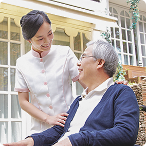
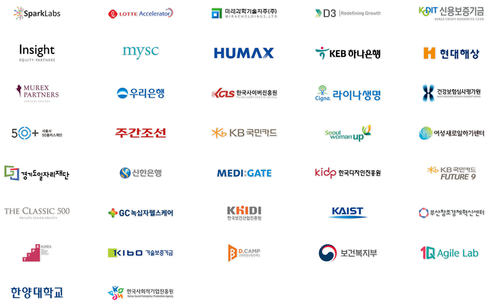
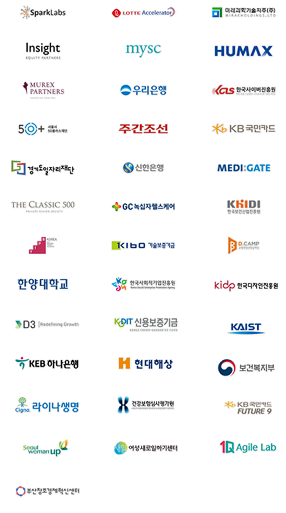

소중한 가족을 위한
케어 서비스
케어닥은 삶을 존중하는 돌봄문화를
만들어갑니다.
더 나은 시니어 케어
서비스를 위해
어르신의 삶에 필요한
모든 서비스를 만들어 갑니다.
시설 정보 찾기
전국 모든 요양병원, 시설에 대한
정보를 찾을 수 있어요.

어르신 돌보미 찾기
조건에 맞는 간병인, 요양보호사를
찾을 수 있어요.
다인간병 서비스
요양병원에서 간병 서비스를
제공해요.
방문요양센터
케어닥에서 직영으로
방문요양센터를 운영하고있어요.
요양보호사교육원
직접 요양보호사 양성을
진행하고있어요.
화제의 케어닥
이데일리
2020-07-21
실버케어 플랫폼 케어닥 시리즈 A 투자 유치
플래텀
2020-07-21
실버케어 플랫폼 케어닥 시리즈 A 투자 유치
벤쳐스퀘어
2020-07-21
실버케어 플랫폼 ‘케어닥’ 팁스 프로그램 선정
이데일리
2020-07-21
더 클래식 500 - 케어닥, 맞춤형 돌봄 서비스 제공협력
머니투데이
2020-07-21
케어닥, 간병인 비용 정찰제 도입… 투명한 플랫폼 구축 첫걸음
중앙일보헬스미디어
2020-07-21
케어닥, 소속 간병인에게 마스크와 손소독제 무상 공급
케어닥의 파트너사

